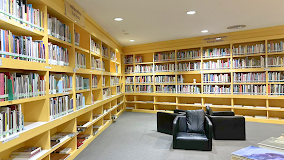

ห้องสมุดศิลปะ (BACC)

ห้องสมุดศิลปะ (BACC)
ห้องสมุดศิลปะตั้งอยู่ภายใน หอศิลปวัฒนธรรมแห่งกรุงเทพมหานคร (Bangkok Art and Culture Centre - BACC) เป็นแหล่งรวมข้อมูลเกี่ยวกับศิลปะ วัฒนธรรม การออกแบบ และประวัติศาสตร์ศิลป์ มีทรัพยากรที่หลากหลายเพื่อสนับสนุนความรู้ด้านศิลปะสำหรับนักศึกษา นักวิจัย และบุคคลทั่วไปที่สนใจ
การเดินทาง
ทางเรือ: สถานีสนามกีฬาแห่งชาติ (National Stadium) ใช้ทางออก 3 เดินข้ามถนนมาทางฝั่งหอศิลป์
โดยรถประจำทาง: สายรถเมล์ที่ผ่าน ได้แก่ สาย 15, 47, 73, 79
ข้อมูลเพิ่มเติม
ที่ตั้ง: ชั้น L หอศิลปวัฒนธรรมแห่งกรุงเทพมหานคร 939 ถ. พระรามที่ 1 แขวงวังใหม่ เขตปทุมวัน กรุงเทพมหานคร 10330
เวลา:
- วันจันทร์-ศุกร์: 10:00 - 18:00 น. (ปิดวันหยุดราชการ)
ดูข้อมูล: https://www.bacc.or.th/plan-your-visit/art-library